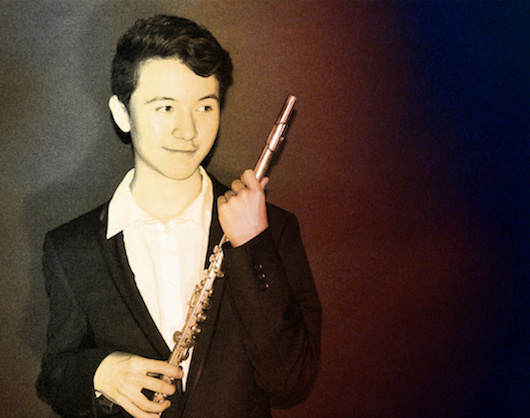
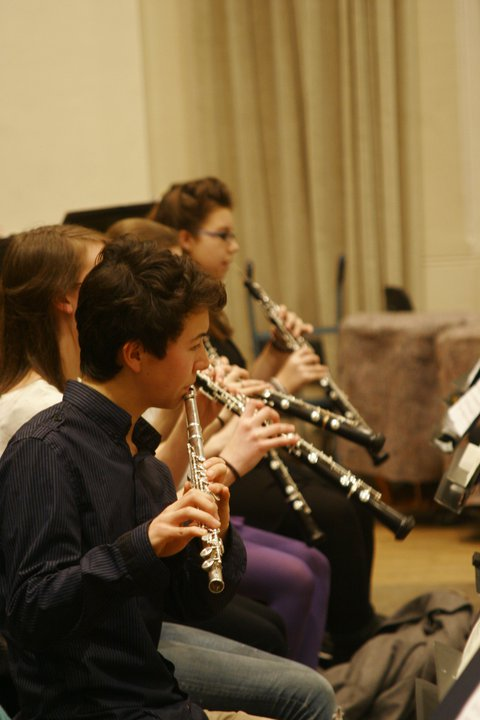
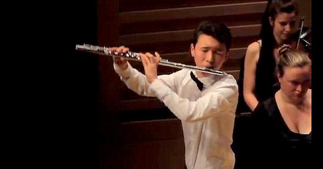
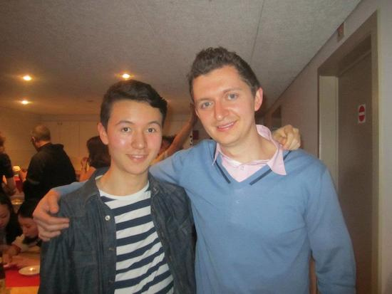
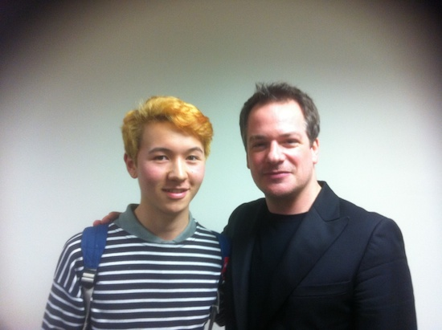

---
title: Media
layout: default
---
Click on image for high resolution.




Rehearsing Beethoven 5 with LSSO, December 2010

Performing Bozza's Image and JS Bach Partita
Weill Hall, Carnegie Hall, October 2012

Performing Concerto No. 1 by Mozart K.313
Kings Place June 2012

With Flute legend & Composer Ian Clarke

Before performing in the Final of Gregynog Young Musician 2013

Receiving a Cheque for Winning Gregynog Young Musician Wind Final 2013

With Principal Flute of New York Metropolitan Opera Denis Bouriakov
After performing to him on his Summer course in Belgium.

With Principal Flute of Berlin Philarmonic Emmanuel Pahud
After his concert at Carnegie Hall October 2012
Mozart Flute Concerto No. 1 K.313 with the Amadeus Orchestra at King's Place, June 2012.